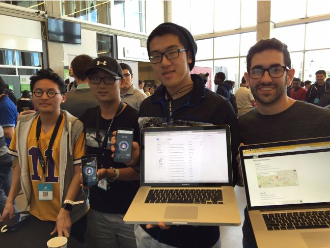
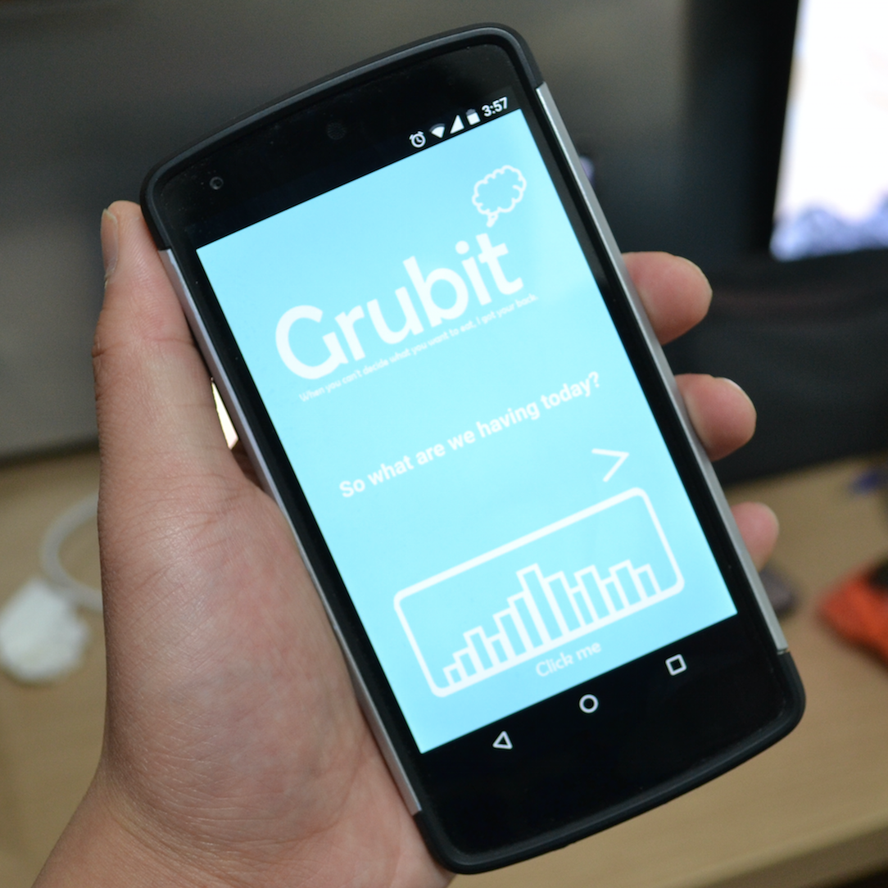
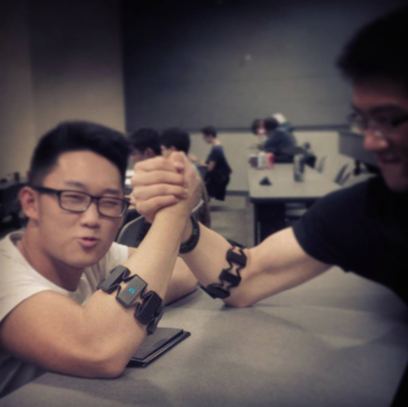
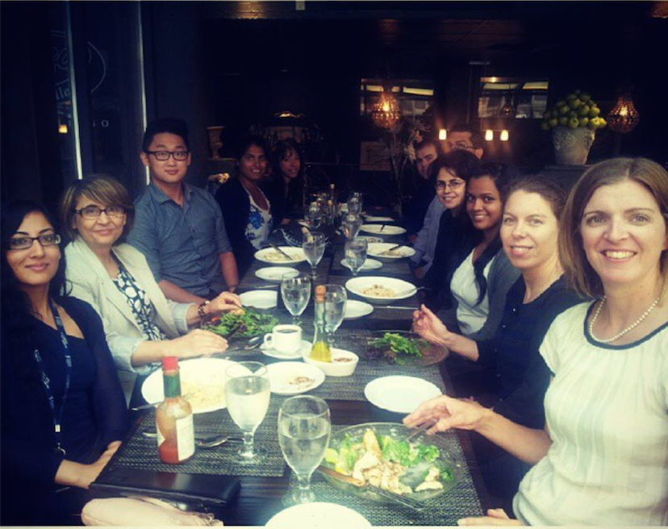
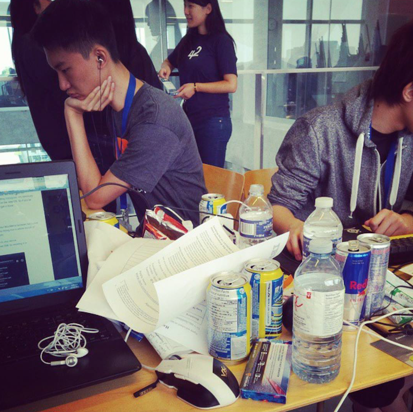
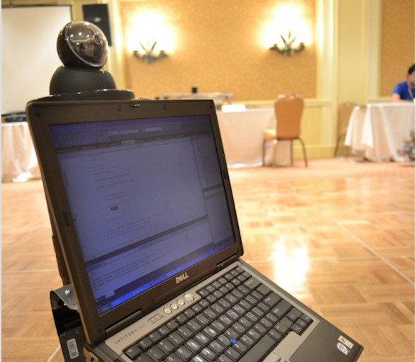

Projects
A place where I combine code with creativity.
FedUp
Created a multi-platform social justice app that allows users to protect themselves through cloud storage and real-time evidence claiming. FedUp is an app that allows users to quickly voice record as well as geo-tag their location when they feel threatened. This idea was derived from the incidents happening down in St. Louis (Specifically Ferguson) with the abundance of city corruption and distrust of authorities. Using the Dropbox and Firebase API, it allowed us to not only provide safety tracking through the Android app but also send user-friendly and feasable data to our web app which is accessible via yourself logging in or when the app senses user is in an incident which prompts the app to automatically send data to the cloud and contact emergency contacts. It'll honestly be a lot easier if you check out our Devpost link.! I promise it's pretty cool! Won Hack the North 2.0's Best Dropbox Hack!
Grubit App
Developed an android app that helps the user decide randomly of what category of restaurant they may want to eat then using integrated Yelps and Google Maps API, outputs 3 best selected restaurants and their information (ratings, address, etc.,) as well as the directions. The purpose of the app is to not only help users out when they are indecisive of what to eat but to also let them explore the world of cuisine in the palm of their hands. Won the 2015 Kik Hackathon!
Myo Ninja - Thalmic Labs Hack
Using the Thalmic Labs Platform and coding in C++, created a multiplayer reaction-based game using the Myo Armband. This was my first Myo product that allowed me to use forearm muscle detections to create a quick and physical game! With actions like kick, punch, and slap; the game is still developing. I will provide a link below of a demo I did at an engineering hackathon. Keep in mind, the game’s front end is using command prompt at that time.Competed in the 2014 UW Engineering Hackathon.
Lung Diagnostic Assessment Program Input System
During my 2014 summer internship, I along with a MBA graduate developed a daily input system for the Lung Diagnostic Assessment Program that allows for hospital staff professionals to efficiently and effectively store patient's diagnosis and test results. This project allowed me to indulge and learn the daily operations and processes a high traffic hosptial undergoes. The input system has been implemented into the LDAP program and is currently being used actively today.
FAVRS APP
Developed the Favrs App with the ultimate goal of revolutionizing the world of bartering. In other words, the Favours App allows users to post tasks they would like to be done as well as offer their services in return - essentially taking payments with cash out of the picture and returning a favour after theirs have been completed. This app project is still on going and will be launching into the Google Play Store very soon! As for my role, I mainly focus on the frontend aspect while bringing the creative and managerial sciences to the forefront. Competed in the 2014 Hack the North Hackathon.
BAJGUIDE ROBOT
As well as assisting with code, I had the role as a Project Manager and helped manage the team’s progress and the quality of work while maintaining a positive and vibrant environment. The robot itself is created to fulfill the role as a guide-dog or a tour guide by recognizing location, speech, QR codes, and other forms of commands. (Note: Featured on numerous news stations due to the unique fact that only recycled electronics were only used sponsored by GHGT Hamilton.)
Welcome to my Gallery of Projects!
I have a habit of indulging myself in endless streams of side projects and it's pretty cool. From hackathons to everyday inspirations, I am obsessed with learning and building new things! So welcome to the page where my devy side meets my creative artsy side! Visit my Github for all the source code :)